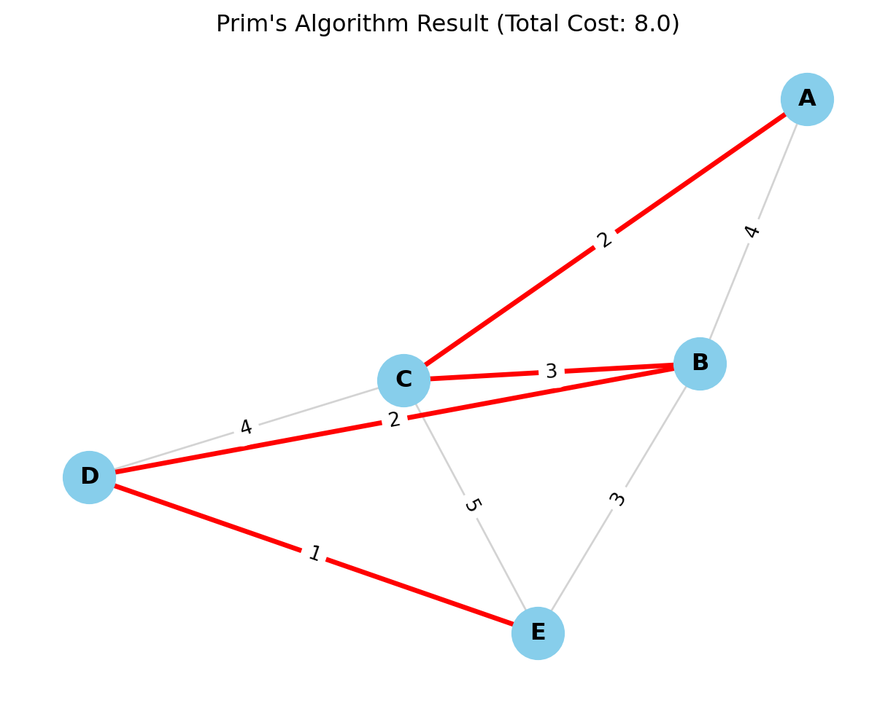
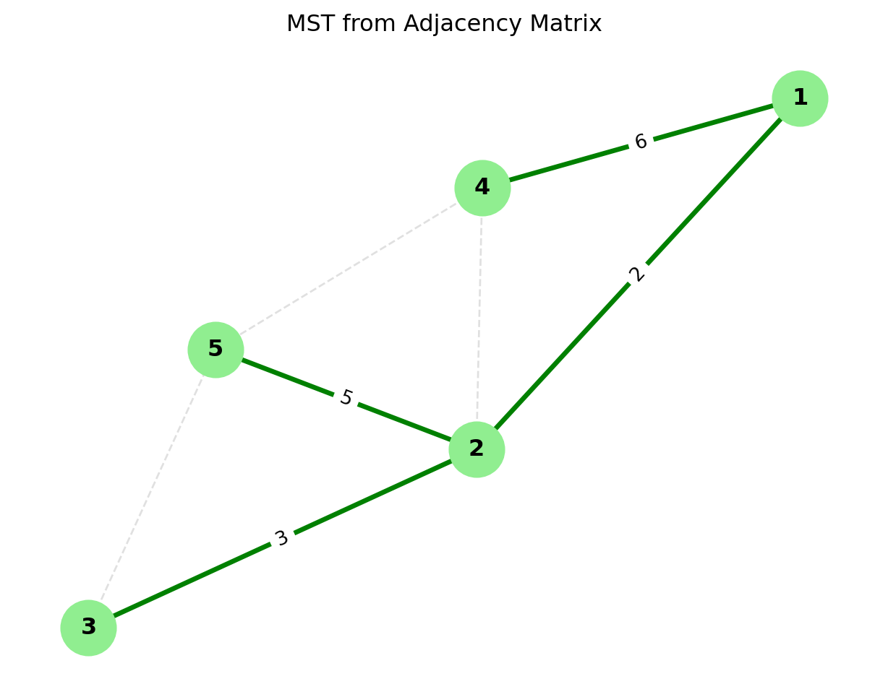
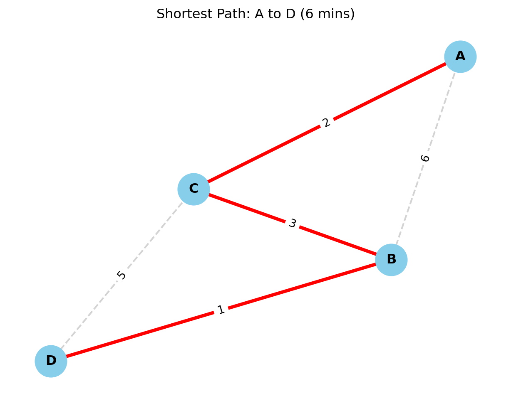
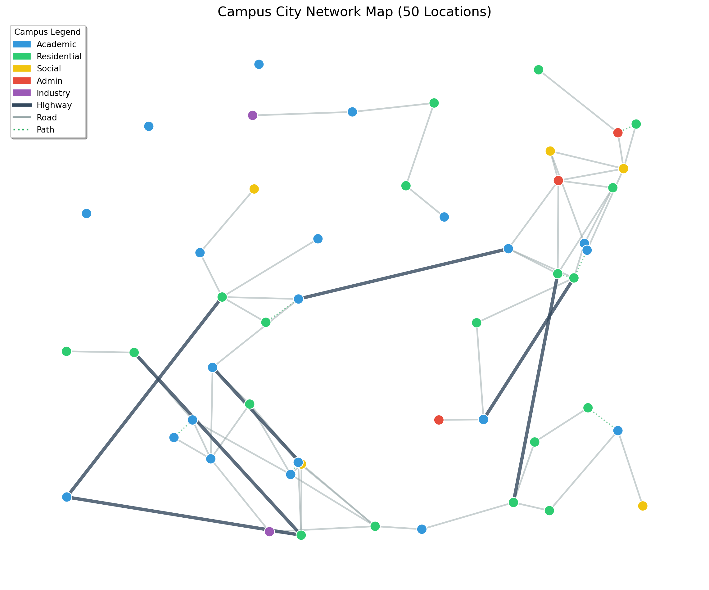

Apply combinatorial optimization to design efficient campus transportation networks, optimize delivery routes, and solve resource allocation problems using graph theory.
5.2 Introduction to Combinatorial Optimization
In the previous modules, we dealt with continuous numbers—smooth curves, gradients, and decimal values. We could tune a variable from 1.0 to 1.1.
But the world of Computer Science is rarely smooth. It is Discrete.
You cannot send 1.5 data packets.
You cannot visit 3.4 cities.
You are either “connected” or “disconnected.”
This brings us to Combinatorial Optimization: the mathematics of making the best choice when the options are distinct, separate, and usually countable. This is the engine behind Google Maps, DNA sequencing, and Amazon’s delivery network.
5.2.1 Theoretical Foundation
5.2.1.1 What is Combinatorial Optimization?
Imagine you are at a restaurant.
Continuous Optimization is like determining exactly how much salt to put in a soup. You can add 1 gram, 1.1 grams, or 1.005 grams. You slide along a smooth scale until it tastes perfect.
Combinatorial Optimization is like choosing items from the menu to stay within a budget while maximizing calories. You cannot order “half a burger” or “root of a pizza.” You must choose distinct items.
Combinatorial optimization deals with finding optimal solutions from a finite set of possibilities. Unlike continuous optimization, we work with discrete structures like graphs, networks, and permutations.
Formal Definition:
Combinatorial optimization is the process of finding an optimal object from a finite set of objects. In most such problems, the set of feasible solutions is discrete or can be reduced to a discrete set.
Delivery Route Planning: Finding shortest paths for supply distribution
Resource Allocation: Assigning resources to facilities efficiently
Scheduling Problems: Timetabling and sequencing operations
5.2.2 Why is this hard? (The Combinatorial Explosion)
You might think, “If the set is finite, why don’t we just check every possibility?”
This is the trap. Let’s look at the Traveling Salesperson Problem (TSP): visiting \(N\) cities exactly once and returning home.
3 Cities: 1 possible route. Easy.
5 Cities: 12 routes. easy.
10 Cities: 181,440 routes. Doable.
20 Cities:\(6 \times 10^{16}\) routes. A supercomputer would take centuries.
In CS terms, the search space grows factorially (\(n!\)). This is why we need smart math—we cannot just “brute force” our way through.
5.2.3 Sample Problem
Problem Statement:
Campus City needs to connect 5 academic buildings with fiber optic cables. The connections form a complete graph with the following distances (in meters):
From To
A
B
C
D
E
A
-
300
400
500
200
B
300
-
350
450
250
C
400
350
-
300
400
D
500
450
300
-
350
E
200
250
400
350
-
Find the minimum total cable length to connect all buildings (not necessarily directly).
Solution Approach:
This is a Minimum Spanning Tree problem. We’ll solve it in Section 4.2 using Prim’s or Kruskal’s algorithm.
Key Insight: We need to connect all nodes with minimum total edge weight, not necessarily creating direct connections between every pair.
5.2.4 Review Questions
What distinguishes combinatorial optimization from continuous optimization? Provide two examples of each from campus logistics.
Explain why many combinatorial optimization problems are NP-hard. What implications does this have for solving real-world problems?
Describe three campus operations scenarios that naturally fit combinatorial optimization formulations.
What is the difference between exact and heuristic solutions in combinatorial optimization? When would you choose each approach?
How does the concept of “feasible solution space” differ between linear programming and combinatorial optimization?
5.3 Graph Algorithms I - Minimum Spanning Trees
Welcome to the world of Graphs. If you learn only one data structure in your entire engineering career, let it be the Graph. It is the universal language of connections. ### Theoretical Foundation
To an engineer, the world is not a list of isolated items; it is a web of relationships. We model these relationships using a mathematical structure called a Graph.
Formally, a graph \(G = (V, E)\) consists of two fundamental sets:
Vertices (\(V\)): These are the “Entities” or the “Nodes” in our network.
In a Logistics context, \(V\) represents warehouses, customers, or intersections.
In a Social Network, \(V\) represents people.
In a Computer Network, \(V\) represents servers or routers.
Notation: The size of this set is often denoted as \(|V|\) or \(n\).
Edges (\(E\)): These are the “Connections” or “Links” between the vertices. An edge connects two vertices \(u\) and \(v\).
If the connection is Weighted, we associate a value \(w_{uv}\) with the edge.
This weight represents the “cost” of the relationship: distance (km), latency (ms), or construction cost ($).
Why do weights matter?
In unweighted graphs, we only care if a connection exists. In weighted graphs—which is what we deal with in engineering optimization—we care about how expensive that connection is.
5.3.0.1 Minimum Spanning Tree (MST)
Now, imagine you are a Civil Engineer for Campus City. You need to connect 10 new buildings to the electrical grid. You can dig trenches between any of them, but digging is expensive.
You have three requirements:
Reach Everyone: Every building must have power.
No Redundancy: You don’t want loops. If Building A connects to B, and B connects to C, adding a cable from A to C is a waste of money (A is already powered via B).
Minimize Cost: You want the total length of all cables to be as low as possible.
This problem is exactly what a Minimum Spanning Tree (MST) solves. Let’s break down the terminology:
“Spanning”: It spans the graph, meaning it includes all vertices in \(V\). No node is left isolated.
“Tree”: In graph theory, a “tree” is a connected graph with no cycles (loops).
Key Property: If a graph has \(n\) vertices, a spanning tree will have exactly \(n-1\) edges. Any more edges, and you create a cycle; any fewer, and the graph becomes disconnected.
“Minimum”: Among all possible trees that connect these nodes, we want the one where the sum of edge weights is the smallest.
Mathematical Definition:
For a connected, undirected, weighted graph \(G=(V, E)\), an MST is a subgraph \(T \subseteq E\) such that: \[
\text{Minimize } W(T) = \sum_{(u,v) \in T} w_{uv}
\] Subject to the constraint that \(T\) connects all vertices and contains no cycles.
A spanning tree connects all vertices of a graph without cycles, minimizing total edge weight.
Applications in Campus City:
Designing campus utility networks
Planning transportation routes
Creating efficient communication networks
Optimizing facility connections
Other Real-World Applications:
Telecommunications: Laying fiber optic cables to connect cities.
Cluster Analysis: In AI, MSTs are used to find natural groupings in data.
Image Segmentation: Grouping pixels to identify objects in computer vision.
5.3.0.2 Prim’s Algorithm- The Strategy of “Growth”
Prim’s Algorithm is like a spreading infection or a growing mold. We start from a single point—a “seed”—and expand outwards, always grabbing the nearest node to our existing cluster.
It is a quintessential Greedy Algorithm. At every single step, we make the locally optimal choice (the cheapest edge available right now), and because of the mathematical properties of Spanning Trees, this guarantees a globally optimal result.
Algorithm Steps:
To implement this, imagine dividing your graph vertices into two sets:
The Visited Set (\(S\)): Nodes already connected to our tree.
The Unvisited Set (\(V-S\)): Nodes we haven’t reached yet.
Step-by-step logic:
Initialization: Start with an arbitrary vertex (it doesn’t matter which one, let’s say Node A). This is the “root” of our tree. The Visited Set contains only \(\{A\}\).
Identify the Frontier: Look at all the edges connecting a node inside our Visited Set to a node in the Unvisited Set. We call these the “crossing edges.
“The Greedy Selection: From these crossing edges, select the one with the minimum weight. Let’s say this edge connects Node A to Node B.
Expansion: Add Node B to our Visited Set. Add the edge \((A, B)\) to our MST.
Repeat: Now, look at all edges from both A and B to the remaining unvisited nodes. Pick the cheapest one again. Repeat this process until the Visited Set contains all vertices.
Complexity:\(O(E \log V)\) with binary heap
5.4 Practice Problems: Prim’s Algorithm
To truly master Prim’s Algorithm, you cannot just read about it. You must trace the execution by hand. This helps you debug code later because you understand the state changes of the set \(S\) (Visited) and \(V-S\) (Unvisited).
Here are three problems ranging from basic mechanics to matrix interpretation.
5.4.0.1 Problem 1:
Objective: Find the Minimum Spanning Tree (MST) and its total cost for the following weighted graph.
We will start with Vertex A as our root. * \(S\) (Visited Set): The set of nodes in our tree. * Frontier: The candidate edges connecting \(S\) to the rest of the graph.
Step
Current Set \(S\)
Candidate Edges (From \(S\) to Outside)
Decision (Min Weight)
New Vertex Added
Cost
Start
\(\{A\}\)
\((A,B)=4, (A,C)=2\)
Pick \((A,C)\)
\(C\)
2
2
\(\{A, C\}\)
\((A,B)=4, (C,B)=3, (C,D)=4, (C,E)=5\)
Pick \((C,B)\)
\(B\)
3
3
\(\{A, C, B\}\)
\((A,B)\) is now internal. Frontier: \((B,D)=2, (B,E)=3, (C,D)=4, (C,E)=5\)
import networkx as nx # for network visualizationimport matplotlib.pyplot as plt# 1. Create the GraphG = nx.Graph()# 2. Add Edges and Weights (from Problem 1 Data)# Format: (Node1, Node2, Weight)edges = [ ('A', 'B', 4), ('A', 'C', 2), ('B', 'C', 3), ('B', 'D', 2), ('B', 'E', 3), ('C', 'D', 4), ('C', 'E', 5), ('D', 'E', 1)]G.add_weighted_edges_from(edges)# 3. Compute Minimum Spanning Tree using Prim's Algorithm# Note: networkx's minimum_spanning_tree uses Kruskal's by default, # but for undirected graphs the result is identical in weight.# We can explicitly ask for Prim's if needed, though the outcome is the MST.mst = nx.minimum_spanning_tree(G, algorithm='prim')# 4. Calculate Total Costtotal_cost = mst.size(weight='weight')print("=== Minimum Spanning Tree Results ===")print(f"Edges in MST: {list(mst.edges(data=True))}")print(f"Total Minimum Cost: {total_cost}")# 5. Visualizationplt.figure(figsize=(8, 6))pos = nx.spring_layout(G, seed=42) # Seed for consistent layout# Draw all edges (thin, gray)nx.draw_networkx_edges(G, pos, edge_color='lightgray', width=1)# Draw MST edges (thick, red)nx.draw_networkx_edges(G, pos, edgelist=mst.edges(), edge_color='red', width=2.5)# Draw Nodesnx.draw_networkx_nodes(G, pos, node_size=700, node_color='skyblue')# Draw Labels (Node Names)nx.draw_networkx_labels(G, pos, font_size=12, font_weight='bold')# Draw Edge Weightsedge_labels = nx.get_edge_attributes(G, 'weight')nx.draw_networkx_edge_labels(G, pos, edge_labels=edge_labels)plt.title(f"Prim's Algorithm Result (Total Cost: {total_cost})")plt.axis('off')plt.show()
=== Minimum Spanning Tree Results ===
Edges in MST: [('A', 'C', {'weight': 2}), ('B', 'C', {'weight': 3}), ('B', 'D', {'weight': 2}), ('D', 'E', {'weight': 1})]
Total Minimum Cost: 8.0

5.4.0.2 Problem 2:
Objective: In computer memory, graphs are often stored as matrices. Find the MST for the graph represented by this Adjacency Matrix. (Note: \(\infty\) or \(0\) implies no direct connection).
import numpy as npimport networkx as nximport matplotlib.pyplot as plt# 1. Define the Adjacency Matrix# In this representation:# - Values > 0 represent edge weights.# - Values == 0 represent NO connection (except the diagonal).adj_matrix = np.array([ [0, 2, 0, 6, 0], # Node 1 [2, 0, 3, 8, 5], # Node 2 [0, 3, 0, 0, 7], # Node 3 [6, 8, 0, 0, 9], # Node 4 [0, 5, 7, 9, 0] # Node 5])# 2. Convert Matrix to Graph# NetworkX has a handy function for this. # It creates a graph where indices (0,1,2...) become nodes.G = nx.from_numpy_array(adj_matrix)# 3. Relabel Nodes (Optional but good for consistency)# The matrix indices are 0-4, but our problem used 1-5.mapping = {0: 1, 1: 2, 2: 3, 3: 4, 4: 5}G = nx.relabel_nodes(G, mapping)# 4. Compute MST using Prim's Algorithmmst = nx.minimum_spanning_tree(G, algorithm='prim')total_cost = mst.size(weight='weight')# 5. Output the Resultsprint("=== Matrix MST Results ===")print(f"Total Minimum Cost: {total_cost}")print("Edges in the MST:")for u, v, data in mst.edges(data=True):print(f" Edge ({u} - {v}) with weight {data['weight']}")# 6. Visualizationplt.figure(figsize=(8, 6))pos = nx.spring_layout(G, seed=10) # Position nodes clearly# Draw the underlying graph (faintly) to show all possibilitiesnx.draw_networkx_edges(G, pos, edge_color='#e0e0e0', width=1, style='dashed')# Draw the MST (bold)nx.draw_networkx_edges(G, pos, edgelist=mst.edges(), edge_color='green', width=2.5)# Draw Nodes and Labelsnx.draw_networkx_nodes(G, pos, node_size=800, node_color='#90EE90') # Light greennx.draw_networkx_labels(G, pos, font_weight='bold')# Draw Edge Labels (Weights) for the MST only (to keep it clean)mst_edge_labels = {(u, v): d['weight'] for u, v, d in mst.edges(data=True)}nx.draw_networkx_edge_labels(G, pos, edge_labels=mst_edge_labels)plt.title("MST from Adjacency Matrix")plt.axis('off')plt.show()
=== Matrix MST Results ===
Total Minimum Cost: 16.0
Edges in the MST:
Edge (1 - 2) with weight 2
Edge (1 - 4) with weight 6
Edge (2 - 3) with weight 3
Edge (2 - 5) with weight 5

5.4.0.3 Problem 3:
Objective: Sometimes, two edges have the same weight. Does it matter which one we pick? Use Prim’s algorithm on the following graph to find out.
Notice that if we had chosen differently in Step 3 (picking \(S-R\) instead of \(P-R\)), the tree structure would look different, but the Total Cost would still be 15. The MST structure is not always unique, but the MST Cost is always unique.
5.4.0.4 Kruskal’s Algorithm- Mergers and Acquisitions
While Prim’s algorithm behaves like a growing mold spreading from a single center, Kruskal’s Algorithm takes a global view. It doesn’t care about “connectivity” initially. It simply looks at the entire list of possible connections (edges) and says: “I want the cheapest one.
Imagine a map of an archipelago with 100 islands.
Prim’s would pick one island and build a bridge to its nearest neighbor, then the next nearest, slowly connecting the chain.
Kruskal’s builds bridges all over the map simultaneously. It connects Island A to B (because it’s cheap), and Island Y to Z (because it’s cheap). Eventually, these small clusters (called a “Forest” of trees) merge into larger clusters, until suddenly, everything is connected.
ALgorithm
Kruskal’s relies on a data structure logic called Union-Find (or Disjoint Set) to keep track of which nodes are already connected.
Sort the Edges: List every single edge in the graph and sort them by weight from Smallest to Largest.
Iterate and Select: Start picking edges from the top of your sorted list (the cheapest ones).
The Cycle Check: For each edge \((u, v)\), ask: “Are \(u\) and \(v\) already in the same connected component?”
No (Safe): Add the edge to your MST. These two separate components are now “United.”
Yes (Cycle Hazard): If they are already connected (perhaps via a long, winding path elsewhere), adding this edge would create a cycle (a loop). Discard this edge immediately.
Termination: Stop when you have added \(V-1\) edges (where \(V\) is the number of vertices).
Complexity: $ O(E E) $ for sorting
Insight: When to use which?
Since Kruskal’s depends on sorting edges, it is generally preferred for Sparse Graphs (where there are few edges, \(E \approx V\)). If the graph is Dense (lots of edges, \(E \approx V^2\)), the sorting takes too long, and Prim’s is usually faster.
5.4.0.5 Comparison
Aspect
Prim’s Algorithm
Kruskal’s Algorithm
Approach
Vertex-based growth
Edge-based selection
Data Structure
Priority queue
Union-Find (Disjoint Set)
Best for
Dense graphs
Sparse graphs
Implementation
Slightly more complex
Simpler to implement
5.4.1 Practice Problems: Kruskal’s Algorithm
Kruskal’s Algorithm is conceptually different from Prim’s because it focuses on the Edges, not the Nodes. The secret to solving these problems by hand is discipline: List, Sort, and Check.
Here are four problems to master this technique.
Solve the campus building connection problem from Section 4.1 using Kruskal’s algorithm.
Solution Steps:
List all edges sorted by weight:
AE: 200
AB: 300
CD: 300
BC: 350
DE: 350
AC: 400
CE: 400
BD: 450
AD: 500
Build MST using Kruskal’s:
Add AE (200): Tree = {A, E}
Add AB (300): Tree = {A, B, E}
Add CD (300): Tree = {A, B, E}, {C, D} (two components)
Add BC (350): Connects components → Tree = {A, B, C, D, E}
Total edges = 4 (V-1 = 4), so stop
MST Edges: AE (200), AB (300), CD (300), BC (350)
Total Length: 200 + 300 + 300 + 350 = 1150 meters
5.4.1.1 Problem 1: Objective: Find the MST cost for the following graph.
Notice that for the first three steps, we created three separate, isolated islands. Only at the very end did the “heavy” bridges connect them. Prim’s algorithm would not have done this; it would have been forced to cross a heavy bridge earlier to keep growing.
Python Code:
import networkx as nximport matplotlib.pyplot as plt# 1. Initialize GraphG = nx.Graph()# 2. Add Edges (Problem 2 Data)# Note: The logic of the problem implies a chain structure: 1-2...3-4...5-6edges = [ (1, 2, 2), (3, 4, 2), (5, 6, 2), (2, 3, 10), (4, 5, 10)]G.add_weighted_edges_from(edges)# 3. Compute MSTmst = nx.minimum_spanning_tree(G, algorithm='kruskal')total_cost = mst.size(weight='weight')# 4. Output Resultsprint("=== Forest Merger Results ===")print(f"Total Minimum Cost: {total_cost}")print("Edges in the MST:")# We sort the edges by weight in the print statement to clearly show # the order Kruskal likely selected them (Islands first, then Bridges).sorted_mst_edges =sorted(mst.edges(data=True), key=lambda x: x[2]['weight'])for u, v, d in sorted_mst_edges:print(f" Edge ({u} - {v}) Weight: {d['weight']}")# 5. Visualizationplt.figure(figsize=(10, 4)) # Wide aspect ratio for the chain# Use a spectral layout to spread the chain out horizontallypos = nx.spectral_layout(G)# Draw Background Edgesnx.draw_networkx_edges(G, pos, edge_color='lightgray', width=1, style='dashed')# Draw MST Edges (Blue)nx.draw_networkx_edges(G, pos, edgelist=mst.edges(), edge_color='blue', width=2.5)# Draw Nodesnx.draw_networkx_nodes(G, pos, node_size=600, node_color='lightcoral')nx.draw_networkx_labels(G, pos, font_weight='bold', font_color='white')# Draw Weightsedge_labels = nx.get_edge_attributes(G, 'weight')nx.draw_networkx_edge_labels(G, pos, edge_labels=edge_labels)plt.title(f"Visualizing the Chain (Cost: {total_cost})")plt.axis('off')plt.show()
Campus City wants to create a pedestrian pathway network connecting 6 key locations with minimum construction cost. The distances (in meters) and construction costs ($ per meter) are:
Connection
Distance
Cost/meter
A-B
400
$50
A-C
300
$60
A-D
500
$45
B-C
350
$55
B-E
450
$50
C-D
400
$60
C-F
300
$65
D-F
350
$55
E-F
400
$50
Find the minimum spanning tree for construction cost.
Solution:
First calculate total cost for each edge:
AB: 400 × 50 = $20,000
AC: 300 × 60 = $18,000
AD: 500 × 45 = $22,500
BC: 350 × 55 = $19,250
BE: 450 × 50 = $22,500
CD: 400 × 60 = $24,000
CF: 300 × 65 = $19,500
DF: 350 × 55 = $19,250
EF: 400 × 50 = $20,000
Apply Prim’s or Kruskal’s to find MST with minimum total cost.
Python code:
import networkx as nximport matplotlib.pyplot as plt# 1. Setup the GraphG = nx.Graph()# 2. Input Data# Format: (Node1, Node2, Distance_Meters, Cost_Per_Meter)raw_data = [ ('A', 'B', 400, 50), ('A', 'C', 300, 60), ('A', 'D', 500, 45), ('B', 'C', 350, 55), ('B', 'E', 450, 50), ('C', 'D', 400, 60), ('C', 'F', 300, 65), ('D', 'F', 350, 55), ('E', 'F', 400, 50)]# 3. Transform Data and Build Graphprint("--- Calculating Edge Weights ---")for u, v, dist, rate in raw_data:# The Optimization Metric is TOTAL COST, not just distance total_cost = dist * rate# We store 'weight' for the algorithm, but keep 'dist' and 'rate' for reference G.add_edge(u, v, weight=total_cost, distance=dist, rate=rate)print(f"Edge {u}-{v}: {dist}m * ${rate}/m = ${total_cost:,}")# 4. Compute MST (Minimizing Total Cost)mst = nx.minimum_spanning_tree(G, algorithm='kruskal')total_project_cost = mst.size(weight='weight')# 5. Output Resultsprint("\n=== Optimization Results ===")print(f"Total Minimum Construction Cost: ${total_project_cost:,.2f}")print("Selected Pathways:")for u, v, d in mst.edges(data=True):print(f" Connect {u}-{v} (Cost: ${d['weight']:,})")# 6. Visualizationplt.figure(figsize=(10, 7))pos = nx.spring_layout(G, seed=42) # Consistent layout# Draw Background Graph (dashed)nx.draw_networkx_edges(G, pos, edge_color='lightgray', width=1, style='dashed')# Draw MST (Solid Green)nx.draw_networkx_edges(G, pos, edgelist=mst.edges(), edge_color='green', width=3)# Draw Nodesnx.draw_networkx_nodes(G, pos, node_size=800, node_color='#98FB98') # Pale Greennx.draw_networkx_labels(G, pos, font_weight='bold')# Label Edges with their Calculated COST (since that's what we optimized)# Dividing by 1000 to show "k" (e.g., 20k) to keep the chart cleanedge_labels = {(u,v): f"${d['weight']/1000:.1f}k"for u,v,d in G.edges(data=True)}nx.draw_networkx_edge_labels(G, pos, edge_labels=edge_labels, font_size=9)plt.title("Pedestrian Pathway MST (Based on Construction Cost)")plt.axis('off')plt.show()
Explain why a minimum spanning tree has exactly V-1 edges for a graph with V vertices.
Compare Prim’s and Kruskal’s algorithms in terms of when each would be preferred for campus network design.
Given a complete graph with 8 vertices, how many possible spanning trees exist? How does this illustrate combinatorial explosion?
How would you modify MST algorithms if edges had both distance and reliability constraints?
Design a campus bicycle path network using MST concepts. What factors beyond distance would you consider?
5.5 Graph Algorithms II - Shortest Path Problems
In the previous section (MST), our goal was Cost Efficiency for the builder (connect everything cheaply). Now, our goal is Efficiency for the traveler (get from A to B quickly). ### Theoretical Foundation
The Core Concept: In a weighted graph, a “path” is a sequence of edges connecting a starting node (Source, \(S\)) to a destination node (Target, \(T\)). The “length” of the path is not the number of edges, but the sum of their weights.
The Shortest Path Problem asks:
“What is the sequence of edges that yields the minimum possible total weight between \(u\) and \(v\)?”
It’s Not Just About Distance
As engineers, you must remember that “weight” is abstract.
In Logistics: Weight = Distance (km). We want the shortest route.
In Networking: Weight = Latency (ms). We want the fastest connection.
In Finance: Weight = Transaction Fee ($). We want the cheapest exchange sequence.
In Social Networks: Weight = 1. We want the fewest introductions (Degrees of Separation).
The Mathematical Mechanism: “Relaxation” How do computers solve this? They don’t “see” the map like we do. They use a technique called Edge Relaxation.
Imagine you are trying to estimate the time it takes to walk from your Dorm to the Library.
Initially, you assume it takes Infinity (\(\infty\)) because you don’t know the way.
You find a path that takes 10 minutes. You “relax” your estimate from \(\infty\) to 10.
Later, a friend shows you a shortcut that takes 8 minutes. You “relax” your estimate again from 10 to 8.
The Relaxation Formula: For an edge connecting \(u\) to \(v\) with weight \(w\): \[
\text{If } d[u] + w(u, v) < d[v]
\]\[
\text{Then } d[v] = d[u] + w(u, v)
\]
\(d[v]\) is our current best guess for the distance to \(v\).
\(d[u]\) is the distance to the neighbor \(u\).
\(w(u,v)\) is the cost to go from \(u\) to \(v\).
All shortest path algorithms (Dijkstra, Bellman-Ford) are simply different strategies for deciding which order to relax the edges.
Warning: The Negative Cycle Trap
Standard algorithms like Dijkstra fail if edge weights are negative (e.g., if a road “pays” you to drive on it). If you have a loop of negative edges, the shortest path becomes \(-\infty\) because you can spin in that loop forever, gaining infinite value. We call this a Negative Cycle.
Uses in Campus Application Context:
Emergency vehicle routing
Delivery optimization
Student navigation systems
Utility maintenance access
5.5.0.1 Dijkstra’s Algorithm
Algorithm Steps:
Initialize distances: 0 for source, ∞ for others
Maintain priority queue of unvisited vertices
Extract vertex with minimum distance
Update distances to neighbors if shorter path found
Repeat until destination reached or queue empty
Assumptions: Non-negative edge weights
Complexity:\(O((V+E) \log V)\) with binary heap
5.5.0.2 Algorithm Limitations
Negative Weights: Not allowed (use Bellman-Ford instead)
Large Graphs: May require optimization for campus-scale networks
Dynamic Changes: Not suitable for frequently changing graphs
A* Search: Heuristic-based, efficient for spatial graphs
Practice Problems: Dijkstra’s Algorithm
Dijkstra’s Algorithm is the gold standard for finding the most efficient route. As we solve these, remember the two golden rules:
Greedy Choice: Always pick the unvisited node with the smallest known distance.
Relaxation: Once you pick a node, check if you can improve the travel time to its neighbors.
5.5.0.3 Problem 1: The Student Commute (Undirected Graph)
Scenario: A student needs to get from the Dorm (A) to the Lecture Hall (D). The edges represent walking time in minutes.
Graph Data: * Nodes:\(\{A, B, C, D\}\) * Edges: * \(A-B: 6\) min * \(A-C: 2\) min * \(C-B: 3\) min (A shortcut between B and C) * \(B-D: 1\) min * \(C-D: 5\) min
Result: The shortest time is 6 minutes. Path:\(A \to C \to B \to D\). (Note: The direct-looking path \(A \to B \to D\) takes \(6+1=7\) mins, and \(A \to C \to D\) takes \(2+5=7\) mins. The zig-zag path is faster!)
Python code:
import networkx as nximport matplotlib.pyplot as plt# 1. Create the Graph# We use nx.Graph() because the problem is Undirected (two-way streets)G = nx.Graph()# 2. Add Edges (From Problem 1 Data)# Format: (Node1, Node2, Weight in Minutes)edges = [ ('A', 'B', 6), ('A', 'C', 2), ('C', 'B', 3), # The shortcut ('B', 'D', 1), ('C', 'D', 5)]G.add_weighted_edges_from(edges)# 3. Run Dijkstra's Algorithm# source='A' (Dorm), target='D' (Lecture Hall)shortest_path = nx.dijkstra_path(G, source='A', target='D')travel_time = nx.dijkstra_path_length(G, source='A', target='D')# 4. Output Text Resultsprint("=== Student Commute Optimization ===")print(f"Optimal Route: {' -> '.join(shortest_path)}")print(f"Total Commute Time: {travel_time} minutes")# 5. Visualizationplt.figure(figsize=(8, 6))# Position nodes nicely (Seed 42 makes it consistent every time you run)pos = nx.spring_layout(G, seed=42)# Draw All Edges (Gray, Dashed)nx.draw_networkx_edges(G, pos, edge_color='lightgray', style='dashed', width=1.5)# Highlight Shortest Path Edges (Red, Thick)# We need to convert the path ['A', 'C', 'B', 'D'] into pairs [('A','C'), ('C','B')...]path_edges =list(zip(shortest_path, shortest_path[1:]))nx.draw_networkx_edges(G, pos, edgelist=path_edges, edge_color='red', width=3)# Draw Nodesnx.draw_networkx_nodes(G, pos, node_size=800, node_color='skyblue')nx.draw_networkx_labels(G, pos, font_size=12, font_weight='bold')# Draw Edge Weights (The Minutes)edge_labels = nx.get_edge_attributes(G, 'weight')nx.draw_networkx_edge_labels(G, pos, edge_labels=edge_labels)plt.title(f"Shortest Path: A to D ({travel_time} mins)")plt.axis('off')plt.show()
=== Student Commute Optimization ===
Optimal Route: A -> C -> B -> D
Total Commute Time: 6 minutes

5.5.0.4 Problem 2: The One-Way Traffic (Directed Graph)
Scenario: A delivery robot needs to navigate one-way streets from the Warehouse (1) to the Lab (4).
Scenario: In fiber optics, a direct cable might be old and slow (high latency), while indirect hops are modern and fast. Find the fastest route from S to E.
Solution Approach: Use transportation simplex method or convert to linear programming.
5.6.4 Review Questions 4.4
Explain why TSP is NP-hard while the assignment problem can be solved in polynomial time.
Compare the transportation problem with the assignment problem. When would you use each in campus logistics?
Design a heuristic algorithm for campus shuttle bus routing that incorporates TSP concepts.
How does the Hungarian algorithm solve assignment problems efficiently?
What are subtour elimination constraints in TSP formulation and why are they necessary?
5.7 Advanced Applications & Micro-Project 4
We are now entering the frontier of modern optimization. While the classic problems (like TSP) deal with static snapshots of the world, these advanced topics deal with Flow, Competition, and Time. This is the math that runs the Internet backbone and global logistics chains.
5.7.0.1 Network Flow Optimization- The Logic of “Throughput”
If TSP is about “Visiting,” Network Flow is about “Capacity.” Imagine the campus water pipe network.
The reservoir is the Source (\(s\)).
The shower in your dorm is the Sink (\(t\)).
Every pipe in between has a Capacity (\(c_{ij}\))—the maximum liters per minute it can handle.
The goal is not to find the shortest path, but to push the Maximum Volume possible from \(s\) to \(t\) without bursting any pipes.
Flow Conservation: What flows into a junction node must flow out (unless it’s the source or sink). No water disappears; no water is magically created.
The Big Theorem: Max-Flow Min-Cut
This is one of the most beautiful results in graph theory. It states: > “The maximum amount of flow possible from source to sink is equal to the capacity of the ‘bottleneck’ (minimum cut) that separates them.”
5.7.0.2 Multi-commodity Flow
The Reality of Shared Infrastructure Standard network flow assumes one type of item (e.g., just “Water”). But in the real world, networks are shared.
In Telecommunications: Your fiber optic cable carries Netflix video packets (Commodity A), Email packets (Commodity B), and Zoom calls (Commodity C) simultaneously.
In Logistics: The highway carries Amazon vans, FedEx trucks, and Uber cars.
The Challenge: These commodities have different sources (\(s_1, s_2...\)) and different destinations (\(t_1, t_2...\)), but they compete for the same edge capacities. \[\sum_{k} f_{ij}^k \le c_{ij}\]
(The sum of all flow types \(k\) on edge \(ij\) cannot exceed the edge’s limit).
This turns a relatively simple problem into a massive, coupled optimization challenge. It is the core mathematical problem behind Net Neutrality and Bandwidth Allocation.
5.7.0.3 Dynamic Routing
When the Map Changes So far, we assumed the graph is static. The distance from A to B is always 5km. But what if the “weight” of an edge changes over time?
Traffic Engineering: At 2:00 AM, the highway weight is low (fast). At 5:00 PM, the weight skyrockets (traffic jam).
Ad-Hoc Networks: In a drone swarm, the nodes themselves are moving, so connections appear and disappear dynamically.
The Solution: Dynamic Routing algorithms (like AODV or time-dependent Dijkstra) do not just look at “Where” (\(u \to v\)); they look at “When” (\(u \to v\) at time \(t\)).
We model this by expanding the graph into a Time-Expanded Graph, where layers represent time steps.
This is how Google Maps reroutes you in real-time when an accident is reported ahead.
Applications:
Campus utility network capacity planning
Emergency evacuation routing
Data network optimization
5.7.0.4 Integration with Previous Modules
From Module 1: Linear constraints for capacity limits
From Module 2: Nonlinear cost functions for congestion
From Module 3: Project scheduling for network deployment
The Capstone Challenge: We have reached the culmination of our graph theory studies. You are now the Chief Systems Engineer for Campus City.
Your challenge is not just to find a path, but to orchestrate a system. A campus is a living organism with veins (roads) and arteries (pathways). Your goal is to design a transportation network that is efficient, resilient to emergencies, and environmentally conscious.
You will move beyond simple algorithms and build a Multi-Modal Model—handling the complexity of pedestrians, cyclists, and shuttles sharing the same space.
5.8.1 Theoretical Models
Before coding, we must ground our work in rigorous mathematical formulations.
5.8.1.1 1. Shortest Path (Flow Formulation)
We model the shortest path not just as a sequence of nodes, but as a “Flow of 1 unit” from Source (\(s\)) to Target (\(t\)) with minimum cost.
Multi-Modal Layers: Differentiate between “Walkable” edges and “Driveable” edges.
Criticality Analysis: Identify “Bridge Edges”—connections that, if removed, would disconnect the graph (using nx.bridges).
import pandas as pdimport networkx as nximport matplotlib.pyplot as pltimport matplotlib.patches as mpatches# ==========================================# 1. LOAD THE DATA# ==========================================print("📂 Loading dataset...")nodes_df = pd.read_csv('large_campus_data/large_locations.csv')edges_df = pd.read_csv('large_campus_data/large_network.csv')# ==========================================# 2. BUILD THE SPATIAL GRAPH# ==========================================G = nx.Graph()# Add Nodes with Position and Type info# We store 'pos' explicitly for plotting laterfor _, row in nodes_df.iterrows(): G.add_node(row['node_id'], pos=(row['x'], row['y']), type=row['type'], name=row['name'])# Add Edges with Mode infofor _, row in edges_df.iterrows(): G.add_edge(row['source'], row['target'], mode=row['mode_type'])# ==========================================# 3. DEFINE STYLING LOGIC# ==========================================# -- Node Colors by Type --node_colors_map = {"Academic": "#3498db", # Blue"Residential": "#2ecc71", # Green"Social": "#f1c40f", # Yellow"Admin": "#e74c3c", # Red"Industry": "#9b59b6"# Purple}# Create a list of colors for each node in G based on its typenode_colors = [node_colors_map.get(G.nodes[n]['type'], "gray") for n in G.nodes()]# -- Edge Styles by Mode --# We separate edges into lists to draw them with different styleshighways = [(u, v) for u, v, d in G.edges(data=True) if d['mode'] =='highway']roads = [(u, v) for u, v, d in G.edges(data=True) if d['mode'] =='road']paths = [(u, v) for u, v, d in G.edges(data=True) if d['mode'] =='path']# ==========================================# 4. PLOT THE MAP# ==========================================plt.figure(figsize=(12, 10))ax = plt.gca()# Get positions from node attributespos = nx.get_node_attributes(G, 'pos')# Draw Edges (Layered: Paths first, then Roads, then Highways)nx.draw_networkx_edges(G, pos, edgelist=paths, edge_color='#27ae60', style='dotted', width=1.5, alpha=0.6, label='Walking Path')nx.draw_networkx_edges(G, pos, edgelist=roads, edge_color='#95a5a6', style='solid', width=2, alpha=0.5, label='Campus Road')nx.draw_networkx_edges(G, pos, edgelist=highways, edge_color='#34495e', style='solid', width=4, alpha=0.8, label='Highway')# Draw Nodesnx.draw_networkx_nodes(G, pos, node_color=node_colors, node_size=150, edgecolors='white', linewidths=1)# Draw Labels (Optional: Only label major nodes if too crowded)# nx.draw_networkx_labels(G, pos, font_size=8, font_color='black') # ==========================================# 5. CREATE LEGEND# ==========================================# Create custom legend handleslegend_handles = []# Node Legendfor n_type, color in node_colors_map.items(): legend_handles.append(mpatches.Patch(color=color, label=n_type))# Edge Legend (Manually creating lines for legend)from matplotlib.lines import Line2Dlegend_handles.append(Line2D([0], [0], color='#34495e', lw=4, label='Highway'))legend_handles.append(Line2D([0], [0], color='#95a5a6', lw=2, label='Road'))legend_handles.append(Line2D([0], [0], color='#27ae60', lw=2, linestyle=':', label='Path'))plt.legend(handles=legend_handles, loc='upper left', title="Campus Legend", frameon=True, shadow=True)plt.title(f"Campus City Network Map ({len(G.nodes)} Locations)", fontsize=16)plt.axis('off') # Turn off X/Y axis numbers for a clean map lookplt.tight_layout()plt.show()
📂 Loading dataset...

5.8.2.2 Part B: Routing Optimization (4 Marks)
The Shuttle Loop: Solve the Traveling Salesperson Problem (TSP) for the campus delivery vehicle. It must visit the Cafeteria, Library, Bookstore, and Admin Block efficiently.
Multi-Modal Routing: Implement a script where the user inputs their mode (Walking vs. Driving).
Logic: If Walking, edge weight = Distance. If Driving, edge weight = Distance / Speed Limit (Time).
Implementation: Use Dijkstra’s Algorithm (nx.dijkstra_path) for point-to-point navigation.
5.8.2.3 Part C: Capacity & Emergency Analysis (4 Marks)
The Evacuation Scenario: A fire alarm triggers at the Main Assembly Hall.
Max Flow Analysis: Use the Max-Flow Min-Cut theorem (nx.maximum_flow) to calculate how many students per minute can exit the campus through the North and South Gates simultaneously.
Bottleneck Identification: Highlight the edges that reach full capacity first. These are your recommendations for road widening.
5.8.2.4 Part D: System Resilience & Strategy (4 Marks)
Disruption Simulation: What happens if the main campus road is closed for construction?
Task: Remove the highest-traffic edge from your graph and re-run the routing algorithms.
Metric: Quantify the increase in average travel time.
Cost-Benefit Proposal: Propose one new edge (e.g., “Build a bridge between Dorm A and Library”). Prove mathematically that adding this edge reduces average path length for students.
5.8.3 Deliverables & Evaluation
1. Technical Report (5 Marks)
A professional engineering report detailing your graph structure.
Mathematical explanation of your cost functions (how you weighted the edges).
Scenario Analysis: “We found that the South Gate bottleneck restricts flow to 50 students/min. Widening path B-C improves this by 20%.”
2. Python Implementation (5 Marks)
A Jupyter Notebook containing:
Class CampusGraph: A Python class to manage your nodes/edges.
def get_shortest_route(mode, start, end): The core function.
def simulate_emergency(): The max-flow calculation.
Visualization: Use matplotlib to plot the campus graph, coloring the “Shortest Path” in Green and “Bottlenecks” in Red.
3. Strategic Recommendations (5 Marks)
A 1-page Executive Summary for the Campus Dean.
Focus on ROI (Return on Investment) based on your math. (e.g., “Investing in a walkway here reduces shuttle congestion by 15%”).
Final Tip
Do not just print the output of the algorithms. Interpret them. If the TSP says the shuttle route is 5km, but a student walking route is 2km, explain why. (One-way streets? Pedestrian shortcuts?). The insight is more valuable than the code.
5.8.4 Review Questions
How would you extend Dijkstra’s algorithm to handle multiple transportation modes with different speeds and costs?
Design a campus evacuation plan using network flow concepts. What special constraints would you consider?
Compare the computational complexity of solving TSP exactly vs using heuristics for campus-scale problems.
How can graph algorithms be integrated with real-time data (traffic, weather) for dynamic route optimization?
What ethical considerations arise when optimizing campus transportation networks (accessibility, equity, safety)?
5.9 Module 4 Summary
5.9.1 Key Concepts Mastered
✅ Combinatorial optimization fundamentals and complexity